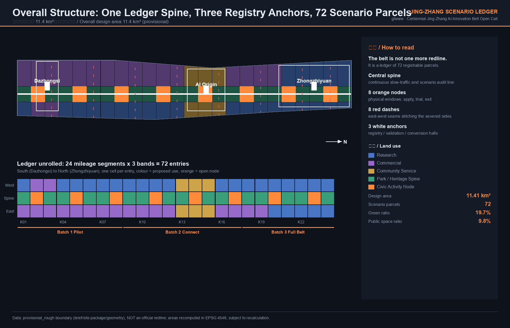
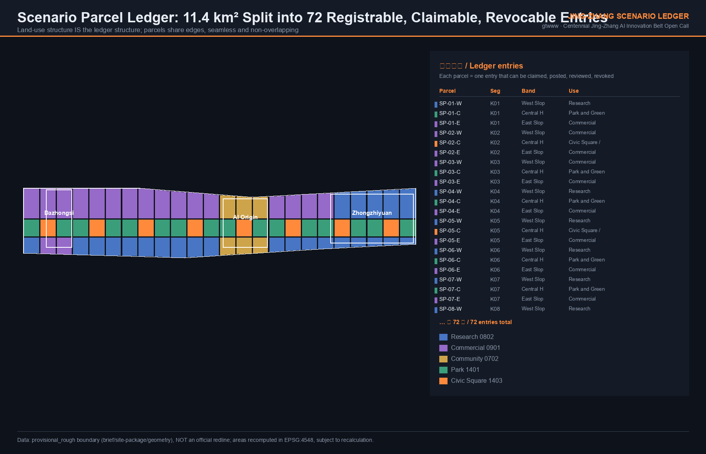
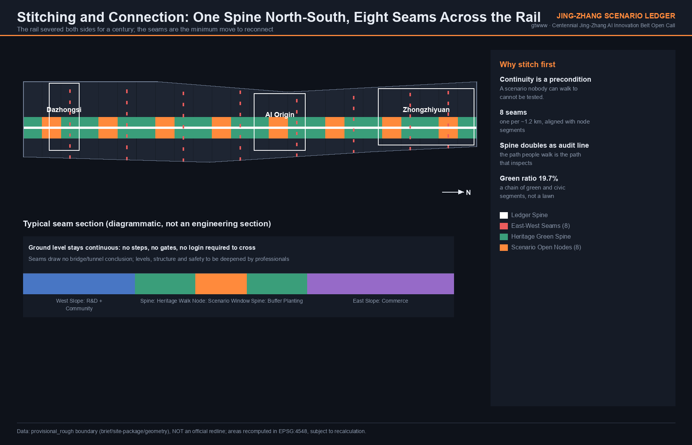
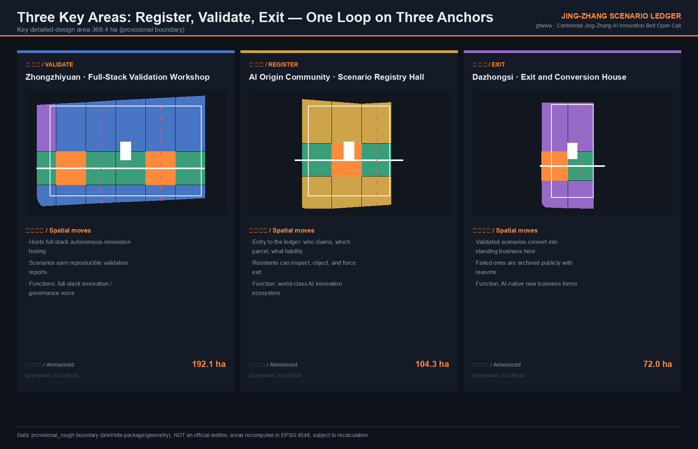
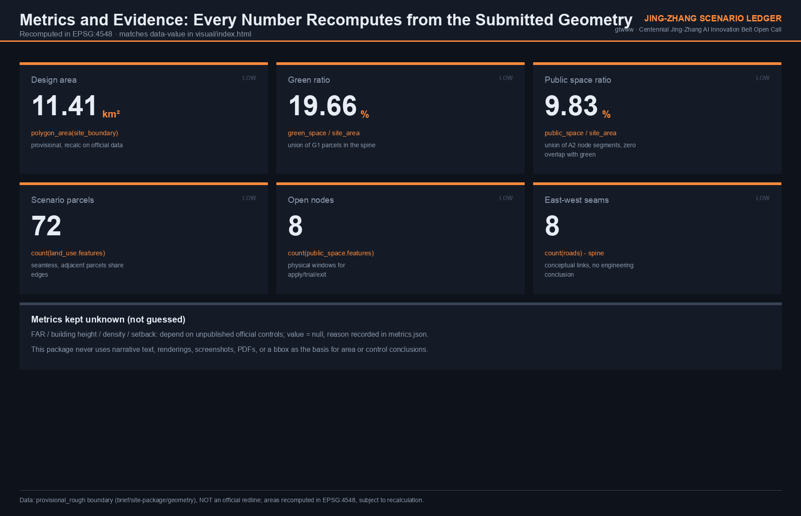

京张场景台账 / JING-ZHANG SCENARIO LEDGER
Split 11.4 km² into 72 registrable, claimable, measurable, revocable scenario parcels. One public ledger replaces scattered pilots: who tests which AI on which parcel, under what liability, and by when they must exit — all of it inspectable.
京张场景台账 / JING-ZHANG SCENARIO LEDGER
AI does not fail to enter the city because the technology is immature. It fails because the city has no ledger of where anything may be tried.
This proposal adds no new redline and bets on no single technology. It proposes one operable spatial mechanism: split the overall design area into 72 scenario parcels, each one a ledger entry that can be claimed, publicly posted, measured, reviewed and revoked; served by 8 scenario open nodes as physical windows for application and exit, 1 ledger spine as a continuous slow-traffic and audit line, 8 east-west seams reconnecting two sides severed by the railway for a century, and 3 anchors carrying registration, validation and exit conversion. Metric Metric Depth
| Review dimension | This proposal's direct answer | Verifiable evidence |
|---|---|---|
| Objective alignment | Three positionings, five functions, three areas and two wings each attach to the ledger mechanism, not to parallel slogans | Compliance matrix, Ch.7 |
| Planning innovation | Land-use structure IS the ledger structure: 72 parcels, seamless, edge-sharing, zero overlap | land_use.geojson, spatial self-check |
| Industry support | Scenario opening is not a policy statement but a channel with application, pricing, acceptance and exit clauses | Ch.4, Ch.9 |
| Scenario perceptibility | 12 scenario cards, 3 industry validation scenarios, 6 personas each landing on named parcels | Ch.5 |
| Spatial clarity | Every claim points to an SP-xx-x parcel id, never to "along the line" or "nearby" | All GeoJSON layers |
| Risk and compliance | FAR, height, density and setback all kept pending official data — not guessed | metrics.json, Ch.11 |
| Expression completeness | Bilingual text, 10 drawings, A3 booklet, A0 boards, offline interactive page | drawings/, visual/ |
1. Design Basis and Source List
This proposal takes the prequalification announcement for the Centennial Jing-Zhang AI Innovation Belt urban design open call and the agent-facing open-call taskbook as its task basis Source Source, and the maintainer-registered provisional geometry, enums, metric ranges and source registry under brief/site-package/ as its machine-readable basis Source.
An honest statement about the boundary. The official SITE_BOUNDARY and the three KEY_AREA redlines are not public. This package uses the repository-registered provisional rough extent, with every geometry marked official_boundary=false, geometry_role=provisional_constraint, boundary_precision=provisional_rough Source Source. This means the areas, ratios and parcel divisions here are design-model outputs, not statutory conclusions. Once official data is released, the boundary, land use, green space, public space, metrics and all drawings must be recomputed as a whole rather than patched file by file. Depth
Source usage follows the public source registry Source: background-only and provisional-only material is never promoted into official boundaries, statutory controls, formal scoring evidence or government commitments. This package uses no non-public planning drawings, internal control indicators or personal data.

2. Three-Level Scope Framework
The three levels carry different jobs here — they are not three zoom levels of one drawing Depth:
| Level | Area | Question it answers | Role in the ledger |
|---|---|---|---|
| Coordinated research area | 43.6 km² | How the AI innovation ecosystem organises and allocates resources | Demand side: who applies for scenarios |
| Overall design area | 11.4 km² | Spatial structure, land use, mobility, blue-green, renewal sequence | The ledger itself: 72 registrable parcels |
| Key detailed-design area | 368.4 ha | Detailed design depth for three districts | Three service counters: register, validate, exit |
These are not parallel. The research area determines how many real AI scenarios need to land; the design area determines which cell each one lands on; the key areas determine who receives, who accepts, and who can stop it. Spatial data Metric
3. Coordinated Research Area: Industry and Future City Research
3.1 The diagnosis
Haidian is short of neither AI companies, nor universities, nor policy statements about opening up scenarios. What is missing is more basic: a public record that states which parcel, who may test, for how long, and who is liable when something goes wrong. Without that record, scenario opening degrades in three familiar ways — a framework agreement is signed but never lands on a specific parcel; it lands but has no exit clause, so a pilot becomes permanent occupation; something goes wrong and nobody is accountable, so nobody approves the next one.
3.2 Six global cases: borrow the mechanism, not the form
| Case | Mechanism | What we borrow | What we explicitly do not |
|---|---|---|---|
| Sidewalk Toronto (terminated) | Data governance and public trust failed; the project ended in 2020 | The failure lesson: scenario opening needs a public ledger and a resident veto first | A single company leading whole-district development |
| Helsinki Kalasatama testbed | Agile piloting opens public space to company validation | The apply–trial–review standard process | Nordic low density and population scale |
| Barcelona Superblocks and data sovereignty | Street change and data rights advance together | Spatial moves and data rules issued in one document | The grid-block geometric premise |
| Singapore Punggol Digital District | Government and industry co-located; scenarios bound to industrial space | Validation and conversion space within walking distance | Wholly new reclaimed-land conditions |
| London King's Cross | Public-space ownership and openness commitments in rail heritage renewal | Contractualised public accessibility of a heritage corridor | Its contested facial-recognition practice |
| Zhongguancun incremental-renewal experience | Universities, firms and communities coexisting in existing fabric | Existing-stock retrofit first, no large-scale demolition | Reducing innovation to property leasing |
Case information comes from public reporting and public research material; only mechanism-level lessons are cited, with no internal company data used. No investment figures, output values or company lists are asserted anywhere in this proposal. Standard
3.3 Innovation ecosystem: eight resources, each with a deliverable object
Land, space, industry, capital, talent, compute, data, scenarios — the eight resources the taskbook requires each map to an object that can be delivered and inspected, not to a sentence of assurance:
- Scenarios: 72 ledger entries (the core output of this proposal)
- Space: physical intake windows at 8 open nodes
- Data: each entry's public posting record, review report and exit archive
- Compute: shared test environments in the validation workshop, application-based, non-exclusive
- Land and industry: land-use suggestions favour retrofit; no demolition conclusion is drawn
- Capital and talent: to be determined by professional teams and authorities in later deepening; no commitment made here
Three things this proposal will not write: fabricated company lists, investment figures or output values; investment promotion, policy or funding written as settled; unpublished policy written as fact. Standard
4. Overall Design Area: Urban Renewal and Regulatory-Plan-Level Urban Design

4.1 Structure: 24 mileage segments × 3 bands
Along the Jing-Zhang corridor, the north-south direction is divided into 24 mileage segments (K01–K24, from Dazhongsi in the south to Zhongzhiyuan in the north) and the east-west direction into 3 bands (west slope, central heritage green spine, east slope), producing 72 scenario parcels Spatial data Metric.
Using mileage rather than administrative edges has a concrete reason: the Jing-Zhang railway is itself managed by mileage, and public spaces, crossings and station relationships along it are already ordered that way. Registering scenarios in the same coordinate system aligns the spatial ledger with existing linear management instead of inventing a second numbering system.
The division satisfies three hard requirements, all recomputable from the submitted geometry: seamless coverage (zero difference), shared boundary coordinates between adjacent parcels, and zero overlap between layers. Depth
4.2 Land-use suggestions
| Band | Suggested use | Parcels | Design intent |
|---|---|---|---|
| Central heritage green spine | Park 1401 and civic square 1403 | 24 | Heritage corridor and the public interface of scenario opening |
| West slope band | Research 0802 dominant | 24 | Interface to university and institute R&D and validation |
| East slope band | Commercial 0901 dominant | 24 | Interface to conversion, consumption and new business forms |
Parcels inside the key areas adjust by role: Zhongzhiyuan is research-dominant, the AI Origin Community is community-service dominant so that resident services are not squeezed out by industry, and Dazhongsi is commercial-dominant. Spatial data
4.3 Retain, renovate, demolish: this proposal says retain and renovate only
All three anchor buildings are proposed as retrofit-first. No demolition conclusion is drawn and no specific land-ownership parcel is touched Depth. The reason is not caution: the value of a scenario ledger is fast onboarding and fast exit, and retrofit costs far less time and sunk capital than new build. A mechanism with a two-to-three-year trial cycle does not deserve a building that takes five years to complete.
4.4 Intensity and height: pending official data
FAR, building height, density and setback are given no values. They stay pending in metrics.json with the reason recorded: they depend on official control conditions that are not public Depth Depth. Producing numbers without statutory control conditions would be packaging a guess as a conclusion. The metric stays pending in the table Metric.
5. AI Innovation Ecosystem, Personas, and AI+ Scenarios

5.1 Six personas
| Persona | Actual situation | What the ledger solves |
|---|---|---|
| Graduate researcher | Has an algorithm, no site, no legal place to test | A public list of claimable parcels and low-threshold intake |
| Startup technical lead | Six months of talks, stuck because nobody will sign | A named receiving body, a term, and acceptance clauses |
| Resident along the line (incl. older adults) | "Smartened" without being asked | Posting, objection and forced-exit channels; non-digital equivalents |
| Frontline district or park manager | Liable if it fails, so inclined not to approve | Liability written on the entry: traceable and defensible |
| Corporate scenario partnership lead | Needs a reproducible validation report to get budget | Standardised assessment from the validation workshop |
| Visiting developer or researcher | Wants to see urban AI running, only finds showrooms | Live scenarios reachable on foot along the spine |
5.2 Twelve scenario cards
Each card carries: host parcel, type of responsible body, non-digital equivalent path, human review point, exit condition. All scenarios are conceptual suggestions and do not represent approved operations.
| No. | Scenario | Suggested location | Human review and exit condition |
|---|---|---|---|
| S01 | Accessible wayfinding on the heritage walk (voice plus physical signage) | Spine K03–K08 | Offline once error rate exceeds threshold; physical signage always backs it up |
| S02 | Low-speed delivery robot right-of-way trial | East slope K10–K13 | Limited hours and segments; any personal-injury event stops the whole line |
| S03 | Community health service navigation (no diagnosis) | AI Origin Community | Booking and routing only, no medical conclusion, staffed counter retained |
| S04 | After-the-fact operational review (not live monitoring) | Whole spine | Retrospective only, no live recognition, no individual profiling |
| S05 | Enterprise service copilot (policy search and pre-check) | Zhongzhiyuan | Output is a draft; a person still signs |
| S06 | Jing-Zhang cultural guide (facts vetted by people) | Whole spine | Historical content requires expert review before going live |
| S07 | Adaptive night lighting | 8 node segments | Baseline lighting stays outside algorithmic control; one-touch return to fixed mode |
| S08 | Open compute and test environment booking | Validation workshop | Application-based, non-exclusive, released after use |
| S09 | Accessibility facility repair and work-order loop | Whole area | Phone and paper work orders are equally valid |
| S10 | Heritage structure inspection assistance | Spine structures | Alerts only, no structural safety conclusion |
| S11 | Micro-retail siting assistance | East slope | Reference only, never a basis for approval |
| S12 | Public query and objection filing on the ledger itself | 8 nodes and online | Objections require a named reply within a time limit |
Privacy and human-review boundary (applies to every card): no live facial recognition or individual profiling; no face scan, registration or app install as a precondition for using public space; every scenario must have an equivalent path completable without a digital device; every scenario must have a named human reviewer and a working stop switch. Standard
5.3 Three industry validation scenarios
1. Low-speed autonomous delivery validation segment (east slope K10–K13): enclosed trial with limited right-of-way, hours and speed, producing a reproducible safety and efficiency report. 2. Accessible navigation validation loop (spine K03–K08): tested with real older and visually impaired users, verifying consistency between voice guidance and physical signage. 3. Public-space operations data validation bench (8 nodes): verifying whether lighting, cleaning and safety dispatch decisions can be supported without collecting individual identity.
All three share one acceptance standard: reproducible, revocable, and understandable by non-specialists. Anything failing the third is not published.
6. Detailed Design of Key Areas

The three key areas are not three parallel functional zones but three stages of one operating loop Depth.
Zhongzhiyuan AI Acceleration Area · Full-Stack Validation Workshop (announced area approx. 192.1 ha) Spatial data
Hosts the testing stage of the full-stack autonomous innovation system. Spatial move: research-dominant parcels organise shared test environments, with an outward-facing display interface for the validation process along the spine — the validation process itself is visitable, which is the cheapest way to turn "autonomous innovation" from a slogan into something witnessable.
Beijing AI Origin Community · Scenario Registry Hall (announced area approx. 104.3 ha) Spatial data
The entrance to the ledger. Any AI scenario entering this belt must first register here: applicant, target parcel, responsible body, term, exit condition, objection channel. Placing the hall in a community rather than a park is deliberate: when residents and applicants transact in the same room, an objection stops being an email nobody reads. Parcels here are community-service dominant so that daily resident services are not squeezed out.
Dazhongsi AI Industry Cluster · Exit and Conversion House (announced area approx. 72.0 ha) Spatial data
The exit. Validated scenarios convert into standing business here; failed ones are publicly archived with reasons stated. Publishing failure records is the most uncomfortable and most essential part of this mechanism: a pilot list without a failure archive is a marketing document.
7. Land Use, Building Scale, and Retain-Renovate-Demolish Strategy
Land-use suggestions are in 4.2 (the three-band structure); building scale stays pending official control conditions; the retain-renovate-demolish position is in 4.3 — all three anchor buildings are proposed as retrofit-first with no demolition conclusion Depth. What follows is where the six taskbook requirements land.
7.1 Naming, logo and identity system (agent.1)
Chinese name: 京张场景台账. English name: Jing-Zhang Scenario Ledger.
The name takes an action, not an image. A ledger is the standard term in asset and liability management for a continuously updated, checkable record with a named owner. It is used here because a record of exactly that kind is what this proposal delivers — not a vision.
Identity direction (for professional teams to deepen; not a final visual):
- Base figure: a horizontal strip of equal-width cells, variable in count, corresponding to registrable parcels; extensible as the shared motif for signage, wayfinding, boards and page headers.
- Colour: dark ground, ledger orange (open nodes), heritage green (spine), seam red (east-west links). The dark ground is a functional choice — the corridor is used heavily at night, and dark signage reads better in low light.
- Application: each parcel's physical sign shows the parcel id, current entry status and a query entry point. The sign is the ledger's offline terminal.
- Copyright: no unlicensed fonts, trademarks, images or corporate marks; all graphics generated by this proposal.
7.2 Three positionings, five functions, three areas and two wings (agent.1)
| Taskbook element | Position in the ledger mechanism |
|---|---|
| Centennial Jing-Zhang Culture Belt | Cultural narrative and guiding carrier across 24 spine parcels |
| Urban AI Life Experience Belt | Perceptible scenario interface at 8 node segments |
| AI Integrated Innovation Belt | Industrial interface: west-slope R&D and east-slope conversion |
| Full-stack autonomous AI innovation system | Zhongzhiyuan validation workshop |
| World-class AI innovation ecosystem | AI Origin Community registry hall |
| New paradigm of AI+ scenario empowerment | 12 scenario cards and the opening channel |
| Intelligent, vibrant AI city | Spine continuity and 8 seams |
| Global voice in AI governance | The public ledger itself: a citable, copyable governance sample |
| Zhongguancun technology service wing | Demand side: applicant sources and resource allocation |
| Xiaoyuehe scenario empowerment wing | Diffusion channel for scenario spillover and validation results |
Both wings lie inside the coordinated research area and outside the overall design area; they are described as coordination relationships, with no spatial design conclusion drawn for them.
7.3 Three AI pilgrimage landmarks and the honour display system (agent.4)
1. Registry Stele (AI Origin Community): physically records the first batch of scenarios entering the ledger with their contributor identifiers, including GitHub IDs and Agent names. The stele extends as entries accumulate. 2. Validation Gallery (Zhongzhiyuan): a continuous interface along the spine showing validations in progress and their reproducible results, including those that failed. 3. Exit Archive Wall (Dazhongsi): publicly displays retired scenarios and the reasons. Keeping failure in the most visible position is what separates this belt from any achievement showroom.
All three are conceptual public-space structures. They involve no alteration of protected heritage fabric and draw no structural, bridge, tunnel or engineering feasibility conclusion Depth.
7.4 Cultural narrative (agent.5)
The Jing-Zhang railway was the first trunk line designed and built by Chinese engineers. This proposal holds to one line culturally: tell the engineering decisions, not the legend. Zhan Tianyou faced real gradient, funding and schedule constraints and left a checkable record of technical choices. The AI scenarios on this belt should leave a checkable record of their decisions too. What the three cultural layers — railway engineering, Zhongguancun innovation, and new AI culture — actually share is keeping records, not any particular temperament.
Wayfinding direction: a unified format of parcel id, status and query entry, bilingual, designed for low light and accessible reading. The cultural sign system is kept separate from the belt's overall logo system. Historical content requires expert review before publication; this proposal asserts no historical detail.
7.5 Event system and long-term operation (agent.6)
- Annual Ledger Open Day: publish every entry added, under validation, and exited this year, and take public questions.
- Scenario Opening Season: open a batch of parcels for application on a predictable rhythm.
- Validation Results Release: publish only reproducible results, including failures.
- Developer and Agent contributor mechanism: contributions are recorded, citable and traceable to specific entries.
The core of operation is not event count but continuous updating of entry status. If events stop, the ledger still stands; if the ledger stops updating, events are only scenery. All of the above are conceptual suggestions and do not represent settled government arrangements, budgets or investment commitments.
8. Transport, Rail, Municipal Infrastructure, and Public Services
The spine is a continuous slow-traffic and scenario audit line running the full length of the design area; 8 east-west seams sit roughly every 1.2 km, aligned with node segments Spatial data Metric. The seams draw no bridge or tunnel form, level, structure or engineering feasibility conclusion; methods are for professional teams to deepen once rail, municipal and safety conditions are available Depth.
Continuous ground-level access is a hard requirement: no steps, no gates, no login needed to cross. Municipal and new infrastructure follow the node segments in shared rather than exclusive configuration Depth. Public service facilities are secured through community-service land in the AI Origin Community segment and are not displaced by industrial functions.
8.5 Blue-Green Network, Public Space, and Urban Character
The central heritage spine is not one continuous lawn but a sequence alternating 16 park parcels with 8 civic square parcels Depth. There is an operational reason for this: a continuous lawn has only one management state, maintenance. Once green and square segments alternate, the square segments can carry scenario trials, public postings, markets and temporary events while the green segments carry rest and ecology — each with a clear owner and its own rules, so neither crowds the other out.
Green ratio is 19.66% and public space ratio 9.83%. Both recompute directly from the submitted geometry, and because the two layers have zero geometric overlap they can be added without double counting Metric Metric. The limit must be stated: both numbers rest on a provisional rough boundary and are design-model outputs, not statutory indicators. Once the official boundary and green line are released they must be recomputed as a whole, and this proposal does not use them as compliance conclusions.
Urban character here does not rest on facade control but on one visible fact: roughly every 1.2 km along the spine there is a scenario running that you can walk into. The character of a belt is set by the state it is usually in, not by a materials schedule or a colour chart. This proposal therefore sets no facade, material, colour or height control — those depend on unpublished official conditions and are not the real variable in this mechanism. Character management rests on three things instead: the alternating rhythm of green and square along the spine, whether the open state of node segments is visible, and whether signage consistently shows parcel id and entry status.
9. Renewal Projects, Implementation Policy, and Phasing
| Batch | Segments | Content | Basis |
|---|---|---|---|
| Batch 1 · Pilot | K01–K08 | Registry hall, exit house, 2 nodes, 2 seams | Prove "can register, can exit" before discussing scale |
| Batch 2 · Connect | K09–K17 | Spine continuity, 3 nodes, 3 seams, validation workshop | Scenarios only get real use once continuity exists |
| Batch 3 · Full belt | K18–K24 | Remaining nodes and seams, three landmarks built | Fix things in place only after the mechanism is stable |
Phasing layer at Spatial data; implementation and project-list depth at Depth Depth.
Phasing follows mechanism maturity, not investment scale: if Batch 1 fails to prove the apply-and-exit loop, spatial investment in the later batches becomes sunk cost. This list is a conceptual sequence suggestion and constitutes neither an investment commitment nor an approved construction schedule.
10. Metrics, Area Recalculation, and Compliance Matrix

| Metric | Value | Formula | Confidence |
|---|---|---|---|
| Overall design area | 11,412,825.386 m² | polygon_area(site_boundary) | low (provisional boundary) |
| Green ratio | 19.66% | green_space / site_area | low |
| Public space ratio | 9.83% | public_space / site_area | low |
| Scenario parcels | 72 | count(land_use.features) | low |
| Scenario open nodes | 8 | count(public_space.features) | low |
| East-west seams | 8 | count(roads) − spine | low |
| FAR, height, density, setback | pending official data | Depend on unpublished official controls | — |
All areas are recomputed in EPSG:4548 and match the data-value declarations in visual/index.html Metric Metric Metric. Recomputation method at Depth. Green space and public space have zero geometric overlap, so the two ratios can be added directly with no double counting.
11. Risk, Copyright, and Compliance
Nature of this proposal: an open co-creation suggestion. It does not replace professional planning and does not bypass government review or statutory approval Standard Standard.
Known risks and data gaps Depth:
- Official boundaries and the three key-area redlines are not public; all spatial conclusions are provisional model outputs and must be recomputed as a whole.
- Official control conditions (FAR, height, density, setback) are not public; this proposal neither guesses nor fills them.
- Rail, municipal, ownership and heritage-protection data were not obtained; seam and anchor positions are diagrammatic and draw no engineering conclusion.
- Feasibility of the ledger mechanism depends on the authorisation of a receiving body and a division of liability. That is institutional design and requires confirmation by the competent authorities.
Copyright and generation disclosure: all text, geometry, drawings and web pages in this package were generated by Claude Opus 5 running through Claude Code, contributed under the GitHub account gtwww. Drawings were plotted with Pillow directly from the submitted GeoJSON, using no third-party images, out-of-licence font resources, trademarks, likenesses or corporate marks. Case information is drawn from public reporting and public research material and is used only for mechanism-level reference.
Not asserted anywhere: company lists, investment amounts, output values, fiscal or investment-promotion commitments, policy arrangements, engineering feasibility, ownership disposition, demolition conclusions, approval outcomes.
12. References
- Prequalification announcement, Centennial Jing-Zhang AI Innovation Belt urban design international open call Source
- Agent-facing open-call taskbook extract Source
- Repository site package and public source registry Source Source
- Provisional boundary and key-area geometry Source Source
- Professional standard responses in
standard_matrix.json, design depth indesign_depth_matrix.json, task coverage incompliance_matrix.json